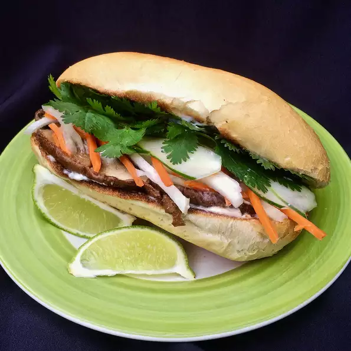

Vegetable Banh Mi

Description
This vegetable banh mi for two stars quick-pickled vegetables and portobello
mushrooms sauteed with fish sauce, sriracha, and five-spice. If you omit the fish sauce it's vegetarian.
Ingredients
- 1/2 cup matchstick-cut carrots
- 1/3 cup matchstick-cut jicama
- 1/4 cup thinly sliced onion
- 1/4 cup water
- 1/4 cup white sugar
- 2 tablespoons fish sauce
- 1 tablespoon soy sauce
- 2 teaspoons sriracha sauce, or more to taste
- 1 1/2 teaspoons garlic powder
- 1 teaspoon CHinese five-spice powder
- salt and ground black pepper to taste
- 2 portobello mushrooms - stems and gills removed, cut into 1/4-inch slices
- 4 tablespoons mayonnaise
- 2 hoagie rolls, split lengthwise and toasted
- 1/4 cup thinly sliced cucumber
- 1 jalapeno pepper, sliced, or to taste (Optional)
- 6 sprigs fresh cilantro, or to taste
- 2 lime wedges
Steps
- Combine carrots, jicama and onion in a small bowl.
- Combine 1/2 cup vinegar, water, and sugar in a saucepan
over medium heat. Stir until sugar dissolves, about 1 minute.
Remove from heat and pour pickling liquid over the sliced vegetables. Let sit for 30 minutes.
- Whisk remaining 1/4 cup vinegar with fish sauce, soy sauce, sriracha sauce,
garlic powder, five-spice powder, salt, and pepper in a 10-inch saute pan over
medium heat. Bring to a boil, about 3 minutes. Add portobello mushrooms; cook until
tender, about 5 minutes. Remove mushrooms from the liquid with a slotted spoon.
- Spread 1 tablespoon mayonnaise over each roll half. Place 1/2 the cooked mushrooms
over bottom halves. Drain pickled vegetables and place over the mushrooms. Divide cucumber,
jalapeno, and cilantro between the sandwiches. Add more sriracha if desired. Squeeze 1 lime wedge
over the filling of each sandwich and cover with top bun half.